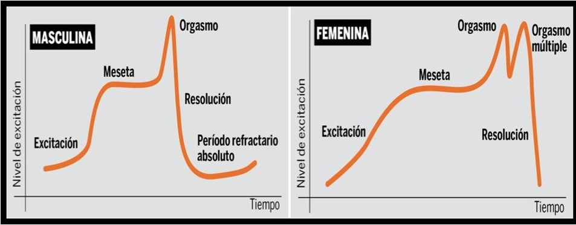
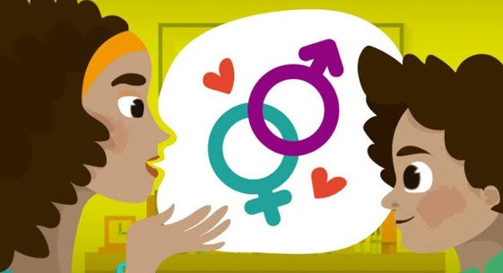

CONCEPTO BIOPSICOSOCIAL DE LA SEXUALIDAD
Introducción:
Para empezar debemos saber cual es el concepto de sexualidad, no obstante, han existido a lo largo de los años, varias formas de considerar a la sexualidad dependiendo, fundamentalmente, de la modalidad de pensamiento científico y de la particular disciplina desde donde se estudie a eta. Así existen, concepciones psicodinámicas de la sexualidad, que se caracterizan sobre todo por asumir la existencia de impulsos, aparentemente innatos, en el ser humano y que se van a enfrentar a las limitaciones de la realidad en la forma de regulación social o autorregulación que de manera inevitable conducen al conflicto.
Para estandarizar este amplio concepto, en 2006 la OMS publica un reporte donde se define a la sexualidad como: “La sexualidad es una aspecto central del hecho del ser humano a lo largo de toda la vida. Esta incluye:
-
• Sexo

-
• Identidades y papeles de género
-
• La orientación sexual
-
• El erotismo
-
• El placer
-
• La intimidad
-
• La reproducción
La sexualidad se vive y se expresa con pensamientos, fantasías, deseos, creencias, actitudes, valores, comportamientos, practicas, papeles y relaciones interpersonales. Aunque la sexualidad engloba estas dimensiones no todas se viven o expresan siempre. La sexualidad esta influenciada por la interacción de factores biológicos, psicológicos y sociales, económicos, políticos, culturales, éticos, legales, históricos, religiosos y espirituales.” (OMS, 2006).
Dentro de esta estandarización, se le puede construir a partir de los planteamientos de la Teoría del Sistema General y estudiarse como un sistema, por medio de la descripción de holones (holón es la parte de un sistema que a su vez es tan complejo en su organización interna que merece ser considerado como una totalidad en sí mismo).

Rescatando la definición de la ONU y el sistema de holones con base en la Teoría del Sistema General se tiene que la sexualidad se ve influenciada por la interacción de factores: biológicos, psicológicos y sociales. A lo que nos compete, estos últimos elementos nos darán la pauta para la descripción biopsicosocial.
A continuación, lo estudiamos por las dimensiones antes mencionadas...
Dimensión biológica:
Aspectos que desde el punto de vista físico y orgánico expresan la sexualidad, por lo tanto, se integran distintos aparatos y órganos regidos por el cerebro que tras recibir información de estos aparatos y órganos realiza una respuesta sexual humana.
Es aquí donde órganos sensoriales (vista, oído, olfato, gusto y tacto) constituyen de manera esencial el mayor aparato sensorial sexual; por su parte los órganos genitales integrados a esta dimensión (que frecuentemente monopolizan aspectos placenteros de la sexualidad), han reprimido el hecho de que no son los únicos capaces de estimular y lograr el placer.
Dentro de esta dimensión, se encuentran los modelos modelos científicos. Tal es el caso del modelo derivado del psicoanálisis o de la respuesta fisiológica del organismo. La propuesta central en este modelo es la existencia de impulsos-pulsiones o fuerzas que operan como factores que impulsan el desarrollo y la conducta. También se consideran las cuestiones relacionadas al desarrollo sexual con sus diferentes etapas, al igual que los aspectos relacionados con las respuesta sexual humana.
William Masters y Virginia Johnson (1966) fueron dos investigadores que se ocuparon de describir en detalle la serie de cambios que ocurren en el cuerpo cuando el individuo tiene actividad sexual, este tema lo volveremos a tocar nuevamente en el apartado de Disfunciones pero diremos que su modelo propone que la “suma” de todos los cambios que el cuerpo experimenta pueden denominarse “tensión sexual”, que siguen una serie de fases descritas en la siguiente imagen:

Dimensión psicológica y social:
Para empezar debemos saber cual es el concepto de sexualidad, no obstante, han existido a lo largo de los años, varias formas de considerar a la sexualidad dependiendo, fundamentalmente, de la modalidad de pensamiento científico y de la particular disciplina desde donde se estudie a eta. Así existen, concepciones psicodinámicas de la sexualidad, que se caracterizan sobre todo por asumir la existencia de impulsos, aparentemente innatos, en el ser humano y que se van a enfrentar a las limitaciones de la realidad en la forma de regulación social o autorregulación que de manera inevitable conducen al conflicto.
Para estandarizar este amplio concepto, en 2006 la OMS publica un reporte donde se define a la sexualidad como: “La sexualidad es una aspecto central del hecho del ser humano a lo largo de toda la vida. Esta incluye:
- •Género: Surge de una construcción social y cultural y engloba a la serie de atributos, normas, valores, actitudes y roles, etc., asignados a mujeres y hombres. El género se expresa mediante los roles que adoptamos al expresarnos y relacionarnos.
- •Erotismo: Es la capacidad humana de experimentar respuestas subjetivas que evocan deseo, excitación y orgasmo. Sin embargo, y tal como lo señala Rubio (1994), el erotismo va más allá de experiencias corporales biológicas ya que incluye también a todas las vivencias psicológicas y simbólicas asociadas con el placer.
- •Vínculos afectivos: La vinculación afectiva es una necesidad de la especie humana y se refiere a la capacidad de desarrollar y experimentar, a nivel físico y mental, lazos sentimentales (de amor, de amistad, fraternos, etc.) por otras personas.
Frecuentemente las primeras actitudes hacia el sexo en la infancia permanecen inalteradas, ya que se basan en lo que oímos y percibimos de nuestros padres (este punto se verá más a fondo al tratar el tema del desarrollo de la sexualidad), al igual que de compañeras y compañeros; esto solo nos dice que sin duda el entorno social que nos rodea mediatiza de manera importante tanto en nuestra actitud como nuestra conducta hacia la sexualidad propia y ajena. Cuando se corrompen los elementos mencionados anteriormente, surgen problemas generan en el individuo reacciones de ansiedad, fracaso, inseguridad que repercuten en la pareja que puede responder con actitudes que van desde la comprensión hasta el rechazo o irritación.
Es así que la dimensión psicosocial de la sexualidad hace conjunción de factores psicológicos con factores sociales.
La evaluación de estas dimensiones se vuelve algo relevante porque en ellas se puede explicar, tanto la diversidad sexual (normalizado y , en el marco de la legalidad, debe ser protegido), como el origen de numerosos trastornos sexuales.
